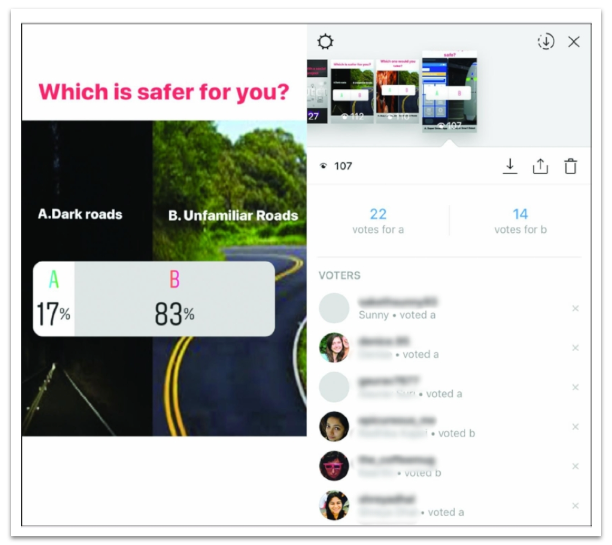
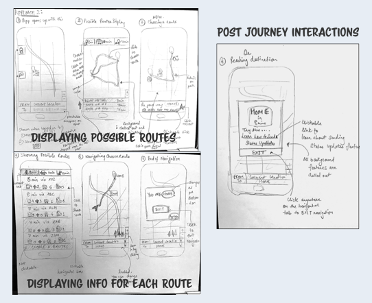
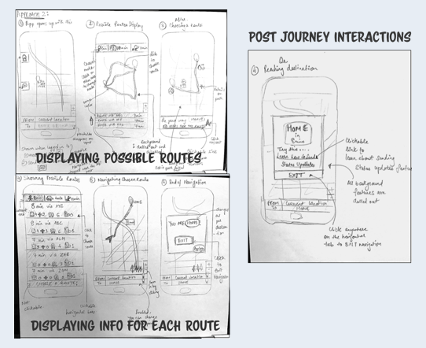

This was an individual project and also my first UX design project!
My first interaction design project started with a personally motivated problem of safety concerns walking alone especially in new cities. We have all had maps apps trick us into taking shorter routes but have they always been the safest ones? .
UX Designer, UX Researcher
Since this was an individual project I had to put on multiple hats during the process. Picking an accessible target audience ensured plenty of feedback!
It was my first week in Ann Arbor and navigating the town hadn't been that easy. Seeing the crime alert emails I realized concerns around safety led to a news headline every other day. So I decided to explore user perception on safety in the local Ann Arbor Community especially students at U of M.
WHY?
37% of adults in the U.S. say there is an area within a mile of where they live where they would be afraid to walk alone at night, similar to attitudes over the last decade and a half. - Gallup U.S. Daily survey Oct. 12-15, 2014
Ann Arbor is 35th on the list of "Top 100 cities with highest percentage of college students".
A mobile app concept to help communicate safety information in a non overwhelming way hence allowing the users to choose their SafeRoute. Here are a few of the key features explored through the first iteration of a low fidelity digital prototype.


“Will this work in a real world scenario?”Through the semester I tried to answer this by following the structure of Dan Saffer’s design Strategy (with a few edits). Highlights from my design process could be diagrammatically represented as:

Shortcuts to highlights from the process:
-
User Research
WHY?
Secondary research, user interviews, comparative analysis, and peer critiques were needed to narrow the problem scope, validate findings, and understand the target audience better.
-
Ideation
WHY?
Brainstorming, storyboarding, and sketching wireframes helped translate findings into design features.
-
Paper Prototype
WHY?
To get quick feedback on interactions and information architecture.
-
Refinements
WHY?
Questions, Options and Criteria Analysis for choosing necessary features with a validated design rationale.


Sketching out ideas involving community, technology, and futuristic concepts.
 

To answer questions raised by ideating on different questions I created task wise paper prototypes and tested it out with users. Here's one such example.
View the first iteration of a digital prototype
The process of refinement started rigorously with the QOC Analysis followed by sketching out possible approaches.Some of the samples created for deciding key interactions were:

Over the fall semester I developed a problem statement and solution simultaneously, which merged into a mobile app. The idea was to use a very rapid approach to usability, emphasizing on small-N user testing and paper prototypes to generate user feedback before investing in detail.
With more user feedback merits of participatory design can be explored.If SafeRoute would be a successful app, it would not only help spread local knowledge within local communities but also help new residents during their initial days in a new place. The next step, is to incorporate feedback from the first iteration of the digital prototype to improve usability and correct any unintuitive designs.